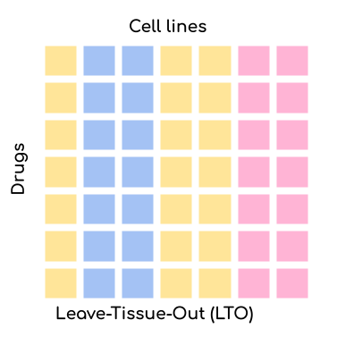
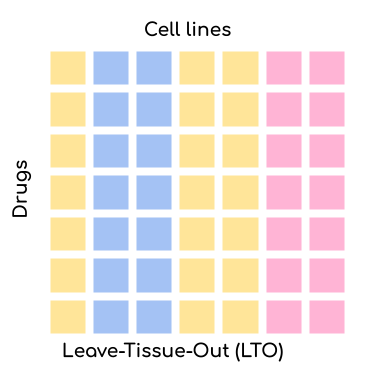

How to use DrEvalPy
Here, we document how to run DrEval with our implemented models and datasets. You can either do this with the standalone
supplied here or with the associated Nextflow pipeline drugresponseeval. We recommend the use of our Nextflow pipeline for computational
demanding runs and for improved reproducibility.
No knowledge of Nextflow is required to run it. The Nextflow pipeline is available on the nf-core GitHub, the corresponding documentation can be found
here. Documentation of the standalone is provided below.
Run a drug response experiment results with drevalpy
You can run it the drug response pipeline, which can test drug response models via:
drevalpy [-h] [--run_id RUN_ID] [--path_data PATH_DATA] [--models MODELS [MODELS ...]] [--baselines BASELINES [BASELINES ...]] [--test_mode TEST_MODE [TEST_MODE ...]]
[--randomization_mode RANDOMIZATION_MODE [RANDOMIZATION_MODE ...]] [--randomization_type RANDOMIZATION_TYPE] [--n_trials_robustness N_TRIALS_ROBUSTNESS] [--dataset_name DATASET_NAME]
[--cross_study_datasets CROSS_STUDY_DATASETS [CROSS_STUDY_DATASETS ...]] [--path_out PATH_OUT] [--measure MEASURE] [--no_refitting] [--curve_curator_cores CORES] [--overwrite] [--optim_metric OPTIM_METRIC] [--n_cv_splits N_CV_SPLITS]
[--response_transformation RESPONSE_TRANSFORMATION] [--multiprocessing] [--model_checkpoint_dir MODEL_CHECKPOINT_DIR] [--final_model_on_full_data] [--no_hyperparameter_tuning]
Options:
-h, --help: Show help message and exit.--run_id RUN_ID: Identifier for the run. Will be used as a prefix for all output files.--path_data PATH_DATA: Path to the data directory, default: data. All data files should be stored in this directory and will be downloaded into this directory. The location of the datasets are resolved by<path_data>/<dataset_name>/<dataset_name>.csv. If providing raw viability data, the file needs to be named<dataset_name>_raw.csvinstead and--no_refittingneeds to be unspecified for automated curve fitting (thats the default) (see--no_refittingfor details and also check the Custom Datasets section).--models MODELS [MODELS ...]: List of models to evaluate. For a list of available models, see the Available Models section.--baselines BASELINES [BASELINES ...]: List of baselines to evaluate. If NaiveMeanEffectsPredictor is not part of them, we will add it. For a list of available baselines, see the Available Models section.--test_mode TEST_MODE [TEST_MODE ...]: Which tests to run (LPO=Leave-random-Pairs-Out, LCO=Leave-Cell-line-Out, LTO=Leave-Tissue-Out, LDO=Leave-Drug-Out). Can be a list of test runs e.g. ‘LPO LCO LTO LDO’ to run all tests. Default is LPO. For more information, see the Available Settings section.--randomization_mode RANDOMIZATION_MODE [RANDOMIZATION_MODE ...]: Which randomization mode to use. Can be a list of randomization modes e.g. ‘SVCC SVCD SVRC SVRD’ to run all randomization modes. Default is None. For more information, see the Available Randomization Tests section.--randomization_type RANDOMIZATION_TYPE: Which randomization type to use. Default is ‘permutation’. For more information, see the Available Randomization Tests section.--n_trials_robustness N_TRIALS_ROBUSTNESS: Number of trials for robustness testing. Default is 0, which means no robustness testing. For more information, see the Robustness Test section.--dataset_name DATASET_NAME: Name of the dataset to use. For a list of available datasets, see the Available Datasets section. For information on how to use custom datasets, see the Custom Datasets section.--cross_study_datasets CROSS_STUDY_DATASETS [CROSS_STUDY_DATASETS ...]: List of datasets to use for cross-study validation. For a list of available datasets, see the Available Datasets section.--path_out PATH_OUT: Path to the output directory, default: results. All output files will be stored in this directory.--measure MEASURE: The name of the measure to use, default ‘LN_IC50’. If using one of the available datasets (see--dataset_name), this is restricted to one of [‘LN_IC50’, ‘EC50’, ‘IC50’, ‘pEC50’, ‘AUC’, ‘response’]. This corresponds to the names of the columns that contain theses measures in the provided input dataset. If providing a custom dataset, this may differ. If the option--no_refittingis not set, the prefix ‘_curvecurator’ is automatically appended, e.g. ‘LN_IC50_curvecurator’, to allow using the refit measures instead of the ones originally published for the available datasets, allowing for better dataset comparability (refit measures are already provided in the available datasets or computed as part of the fitting procedure when providing custom raw viability datasets, see--no_refittingfor details).--no_refitting: If not set, the measure is appended with ‘_curvecurator’. If a custom dataset_name was provided, this will invoke the fitting procedure of raw viability data, which is expected to exist at<path_data>/<dataset_name>/<dataset_name>_raw.csv. The fitted dataset will be stored in the same folder, in a file called<dataset_name>.csv. Also check the Custom Datasets section. Default is False i.e. curvecurated drug response measures are utilzed.--curve_curator_cores CURVE_CURATOR_CORES: Number of cores to use for CurveCurator fitting. Only used when--no_refittingis not set. Default is 1.--overwrite: If set, existing files will be overwritten.--optim_metric OPTIM_METRIC: The metric to optimize for during hyperparameter tuning. Default is ‘RMSE’. For more information, see the Available Metrics section.--n_cv_splits N_CV_SPLITS: Number of cross-validation splits. Default is 7.--response_transformation RESPONSE_TRANSFORMATION: Transformation to apply to the response data. Default is None. For more information, see the Available Response Transformations section.--multiprocessing: If set, we will use raytune for fitting. Default is False.--model_checkpoint_dir MODEL_CHECKPOINT_DIR: Directory to save model checkpoints. Default is ‘TEMPORARY’.--final_model_on_full_data: If set, saves a final model trained/tuned on the union of all folds after CV. Default is False.--no_hyperparameter_tuning: If set, disables hyperparameter tuning and uses the first hyperparameter set. Default is False.
Example:
drevalpy --run_id my_first_run --models NaiveDrugMeanPredictor ElasticNet --dataset TOYv1 --test_mode LCO
Note: You need at least 7 CV splits to get a meaningful critical difference diagram and the corresponding p-values.
Visualize and evaluate results with drevalpy-report
Executing the main script drevalpy will generate a folder with the results which includes the predictions of all models
in all specified settings. The drevalpy-report CLI will evaluate the results with all available metrics and create an
HTML report with many visualizations. You can run it with the following command:
drevalpy-report [-h] --run_id RUN_ID --dataset DATASET [--path_data PATH_DATA] [--result_path RESULT_PATH]
Options:
-h, --help: Show help message and exit.--run_id RUN_ID: Identifier for the run which was used when executing thedrevalpycommand.--dataset DATASET: Name of the dataset which was used when executing thedrevalpycommand.--path_data PATH_DATA: Path to the data directory, default: data.--result_path RESULT_PATH: Path to the results directory, default: results.
Example:
drevalpy-report --run_id my_first_run --dataset TOYv1
The report will be stored in the results/RUN_ID folder.
You can open the index.html file in your browser to view the report.
Available Settings
DrEval is designed to ensure that drug response prediction models are evaluated in a consistent and
reproducible manner. We offer three settings via the --test_mode parameter:

 

{kind=link}

Leave-Pair-Out (LPO): Random pairs of cell lines and drugs are left out for validation/testing but both the drug and the cell line might already be present in the training set. This is the easiest setting for your model but also the most uninformative one. The only application scenario for this setting is when you want to test whether your model can complete the missing values in the training set.
Leave-Cell-Line-Out (LCO): Random cell lines are left out for validation/testing but the drugs might already be present in the training set. This setting is more challenging than LPO but still relatively easy. The application scenario for this setting is when you want to test whether your model can predict the response of a new cell line. This is very relevant for personalized medicine or drug repurposing.
Leave-Drug-Out (LDO): Random drugs are left out for validation/testing but the cell lines might already be present in the training set. This setting is the most challenging one. The application scenario for this setting is when you want to test whether your model can predict the response of a new drug. This is very relevant for drug development.
An underlying issue is that drugs have a rather unique IC50 range. That means that by just predicting the mean IC50 that a drug has in the training set (aggregated over all cell lines), you can already achieve a seemingly good prediction (as evaluated by naive R^2 or correlation metrics). This is why we also offer the possibility to compare your model to a NaivePredictor that predicts the mean IC50 of all drugs in the training set. We also offer several less naive predictors: NaiveCellLineMeanPredictor, NaiveDrugMeanPredictor, NaiveTissueMeanPredictor, and NaiveTissueDrugMeanPredictor. The NaiveCellLineMeanPredictor predicts the mean IC50 of a cell line in the training set, the NaiveDrugMeanPredictor predicts the mean IC50 of a drug in the training set, the NaiveTissueMeanPredictor predicts the mean IC50 of a tissue in the training set, and the NaiveTissueDrugMeanPredictor predicts the mean IC50 per tissue-drug combination (aggregated across all cell lines with that tissue-drug pair). The NaiveMeanEffectPredictor combines the effects of cell lines and drugs. It is equivalent to the NaiveCellLineMeanPredictor and NaiveDrugMeanPredictor for the LDO and LCO settings, respectively, as test cell line effects and drug effects are unknown in these settings.
In LCO, NaiveTissueDrugMeanPredictor is the strongest baseline, while in all other settings, NaiveMeanEffectPredictor is the strongest.
Available Models
In addition to the Naive Predictors, we offer a variety of more advanced baseline models and
some state-of-the-art models to compare your model against. You can either set them as baselines or as models via the
--models and --baselines parameters.
We first identify the best hyperparameters for all models and baselines in a cross-validation setting. Then, we
train the models on the whole training set and evaluate them on the test set.
For --models, you can also perform randomization and robustness tests. The --baselines are skipped for these tests.
Available Datasets
We provide commonly used datasets to evaluate your model on (GDSC1, GDSC2, CCLE, CTRPv2) via the --dataset_name parameter.
Further, we provide 2 datasets with more clinical relevance: BeatAML2 and PDX_Bruna.
Dataset Name |
Number of DRP Curves |
Number of Drugs |
Number of Cell Lines |
Description |
|---|---|---|---|---|
GDSC1 |
316,506 |
378 |
970 |
The Genomics of Drug Sensitivity in Cancer (GDSC) dataset version 1. |
GDSC2 |
234,437 |
287 |
969 |
The Genomics of Drug Sensitivity in Cancer (GDSC) dataset version 2. |
CCLE |
11,670 |
24 |
503 |
The Cancer Cell Line Encyclopedia (CCLE) dataset. |
CTRPv1 |
60,758 |
354 |
243 |
The Cancer Therapeutics Response Portal (CTRP) dataset version 1. |
CTRPv2 |
395,025 |
546 |
886 |
The Cancer Therapeutics Response Portal (CTRP) dataset version 2. |
TOYv1 |
2,711 |
36 |
90 |
A toy dataset for testing purposes subsetted from CTRPv2. |
TOYv2 |
2,784 |
36 |
90 |
A second toy dataset for cross study testing purposes. 80 cell lines and 32 drugs overlap TOYv2. |
BeatAML2 |
62,487 |
166 |
569 (patients) |
Ex vivo drug sensitivity screening for a cohort of acute myeloid leukemia (AML) patients. |
PDX_Bruna |
2,559 |
104 |
37 (mouse passages) |
Ex vivo drug sensitivity screening for short-term cultures of PDTX-derived tumor cells from breast cancer patients |
If not specifying --no_refitting option with these datasets (default: false), the desired measure provided with the --measure option is appended with “_curvecurator”, e.g. “IC50_curvecurator”.
In the provided datasets, these are the measures calculated with the same fitting procedure using CurveCurator. To use the measures reported from the original publications of the
dataset, use the --no_refitting option, which will use the original measures as provided in the datasets.
This however makes it hard to do cross-study comparisons, since the measures may not be directly comparable due to differences in the fitting procedures used by the original authors.
It is therefore recommended to always use DrEvalPy without the --no_refitting option, which will lead to the use of the refitted measures that are calculated with the same procedure for all datasets.
Corresponding feature data
The datasets have corresponding cell-line and drug feature data. The sources are as follows:
- GDSC1 & 2:
Gene expression: RMA-normalized microarray expression data from the GDSC Data Portal (raw data).
Methylation: Preprocessed Beta Values for all CpG islands, IlluminaHumanMethylation450 BeadChip GDSC Data Portal.
- CCLE, CTRPv1, CTRPv2:
Gene expression: reprocessed RNA-seq data PRJNA523380
Methylation: DepMap Beta Values for RRBS clusters
CCLE_RRBS_TSS_CpG_clusters_20180614.txt
- Used by GDSC1, 2, CCLE, CTRPv1 and v2:
Mutation & CNV data: Sanger Cell Model Passports.
Proteomics: Raw data at PRIDE: PXD030304
- BeatAML2:
Gene expression: RNA-seq but not re-processed because of missing FASTQ files. Taken from the corresponding website
Mutation data would have been available but is measured too shallow, so we chose not to include it
- PDX_Bruna:
Retrieved from the corresponding figshare
Gene expression: Microarray expression data
Copy number variation: Reprocessed with GISTIC2.0
Mutation data would have been available but is measured too shallow, so we chose not to include it
Methylation data would have been available but only Promoter methylation data which is incompatible with the CpG methylation data we have for the other screens.
- Drug features
Morgan Fingerprints were generated with RDKit from SMILES either downloaded from PubChem or provided by GDSC.
- DIPK associated drive
MolGNet features were generated from SMILES
BIONIC features were generated from top expressed genes
- Gene lists
The 978 landmark genes are from the L1000 assay
The drug target genes are the genes targeted by the drugs used in GDSC, extractable from the GDSC Data Portal (compounds annotation).
The intersection lists are features occurring in all datasets for the respective OMICs to ensure that cross-study predictions can easily be done because the features are shared.
Reduced versions of the lists only containing genes occurring in all datasets
For more information on the preprocessing, please refer to the corresponding GitHub Repo.
Custom Datasets
You can also provide your own custom dataset via the --dataset_name parameter by specifying a name that is not in the list of the available datasets.
This can be prefit data (not recommended for comparability reasons) or raw viability data that is automatically fit with the exact same procedure that was used to refit
the available datasets in the previous section.
Raw viability data
DrEvalPy expects a csv-formatted file in the location
<path_data>/<dataset>/<dataset_name>_raw.csv(corresponding to the--path_dataand--dataset_nameoptions), which contains the raw viability data in long format with the columns [“dose”, “response”, “sample”, “drug”] and an optional “replicate” column. If replicates are provided, the procedure will fit one curve per sample / drug pair using all replicates.- All dosages have to be provided in µM! Drevalpy will compute the following response measures:
pEC50_curvecurator: computed internally by CurveCurator. Is computed as -log10(EC50_curvecurator[M]).
EC50_curvecurator: given in µM
IC50_curvecurator: given in µM
LN_IC50_curvecurator: computed from IC50_curvecurator
AUC_curvecurator
The option
--curve_curator_coresmust be set.--no_refittingmust not be set.DrEvalPy provides all results of the fitting in the same folder including the fitted curves in a file folder
<path_data>/<dataset>/<dataset_name>.csv
Prefit viability data
DrEvalPy expects a csv-formatted file in the location
<path_data>/<dataset>/<dataset_name>.csv(corresponding to the--path_dataand--dataset_nameoptions), with at least the columns [“cell_line_id”, “drug_id”, <measure>”] where <measure> is replaced with the name of the measure you provide.For LTO, you must also provide a “tissue” column with tissue information
Available measures depend on the column names and can be provided using the –measure option.
It is required that you use measure names that are also working with the available datasets if you use the
--cross_study_datasetsoptionYour dataset will be read in with the DrugResponseDataset.from_csv method (drevalpy.datasets.dataset);
Example response filewould support the measure AUC.
Available Randomization Tests
We offer the possibility to test how much the performance of your model deteriorates when you randomize the input training data. We have several randomization modes and types available.
The modes are supplied via --randomization_mode and the types via --randomization_type.:
SVCC: Single View Constant for Cell Lines: A single cell line view (e.g., gene expression) is held unperturbed while the others are randomized.
SVCD: Single View Constant for Drugs: A single drug view (e.g., drug fingerprints) is held unperturbed while the others are randomized.
SVRC: Single View Random for Cell Lines: A single cell line view (e.g., gene expression) is randomized while the others are held unperturbed.
SVRD: Single View Random for Drugs: A single drug view (e.g., drug fingerprints) is randomized while the others are held unperturbed.
Currently, we support two ways of randomizing the data. The default is permututation.
Permutation: Permutes the features over the instances, keeping the distribution of the features the same but dissolving the relationship to the target.
Invariant: The randomization is done in a way that a key characteristic of the feature is preserved. In case of matrices, this is the mean and standard deviation of the feature view for this instance, for networks it is the degree distribution.
Robustness Test
The robustness test is a test where the model is trained with varying seeds. This is done multiple times to see how
stable the model is. Via --n_trials_robustness, you can specify the number of trials for the robustness tests.
Available Metrics
We offer a variety of metrics to evaluate your model on. The default is the R^2 score. You can change the metric via
the --optim_metric parameter. The following metrics are available:
R^2: The coefficient of determination. The higher the better.
MSE: The mean squared error. The lower the better.
RMSE: The root mean squared error. The lower the better.
MAE: The mean absolute error. The lower the better.
Pearson: The Pearson correlation coefficient. The higher the better.
Spearman: The Spearman correlation coefficient. The higher the better.
Kendall: The Kendall correlation coefficient. The higher the better.
Normalized [R^2, Pearson, Spearman, Kendall]: A version of the metric where the true and predicted response values are normalized by the predictions of the NaiveMeanEffectsPredictor.
Available Response Transformations
We offer the possibility to transform the response data before training the model. This can be done via the
--response_transformation parameter. The following transformations are available:
None: No transformation is applied.
standard: The sklearn StandardScaler is applied.
minmax: The sklearn MinMaxScaler is applied.
robust: The sklearn RobustScaler is applied.